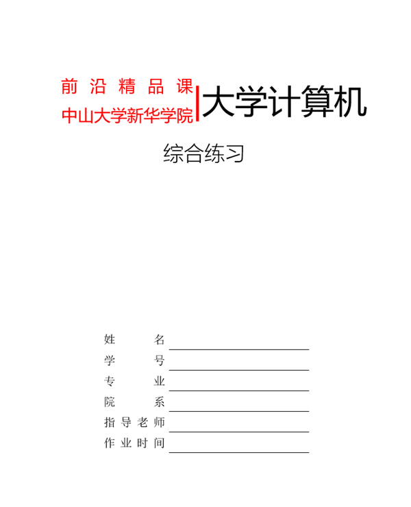
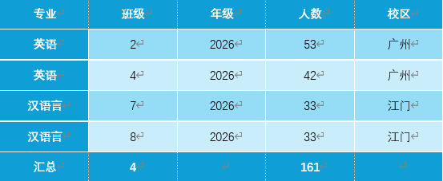

文档编辑
Document
- 文档准备
- 打开前面的练习文档
- 另存为：学号+姓名+文档编辑
- 页面设置
- 布局：纸张大小、方向等保持默认数据
- 页边距：上边距：30mm；下边距：25mm；左边距：30mm；右边距25mm
- 文档设计
- 文件 → 信息：进一步完善文档信息
- 设计 → 字体 → 自定义字体
命名：我的字体
西文：Times New Roman
中文：宋体
- 使用学号为文档添加文字水印
- 为文档设置页面颜色
- 为文档设置页面边框
- 首页设计
- 在文档开始处插入新页/空页：快捷键 Ctrl + Enter
- 参考下图，利用表格布局，完成封面设计并录入个人 真实信息

参考封面
- 段落
- 创建诺干正文段落
- 两端对齐
- 首行缩进 2 字符
- 正文宋体、西文新罗马 Times New Roman、常规 5 号
- 段前段后 6 磅、固定行距24磅
- 文档结束处插入作者和日期，右对齐
- 首字下沉
- 设置正文某一段落为首字下沉 4 行，距离正文 1 厘米
- 分栏
- 设置正文的5个段落分 3 栏显示
- 第1栏：宽度 10，间距 2 字符
- 第2栏：宽度 14，间距 2 字符
- 使用分隔线
- 表格
- 复制以下文本到文档中
专业#班级#年级#校区#人数
英语#2#2026#江门#40
英语#4#2026#江门#44
汉语言#7#2026#江门#42
汉语言#8#2026#江门#40
- 转换为表格
- 各行高度 1 厘米；宽度自动（页宽）
- 单元格文字：水平、垂直居中
- 为表格添加1行作为汇总行
- 汇总行第一个单元格录入：汇总
- 使用公式计算
总人数
班级数
- 应用表格样式
- 在表格上方插入题注：表1 2026年度计算机应用基础开班情况统计

参考效果
- 页眉页脚
- 为文档插入页眉
距离文档顶部 1 厘米
三栏内容，左中右分别插入文档的作者、标题和单位
底部指定实线边框；颜色、粗细自定
- 为文档插入页脚
距离文档底部 1 厘米
三栏内容，左中右分别是当前日期、页码和主管
顶部指定实线边框；颜色、粗细自定
- 页码
页脚显示
阿拉伯数字
页码采用总页码和当前页码的形式如，2/4
格式为 第 x 页/总 y 页
- 封面设计
- 插入"封面" → "积分"
- 部分数据从文档信息中抓取
- 部分数据需要手动编辑
- 提交文档
- 编辑完成后，导出为PDF，命名同上
- 提交Word文档和PDF文档到学习通